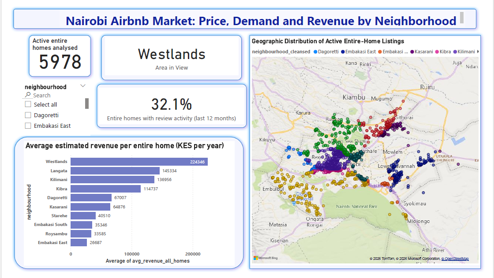
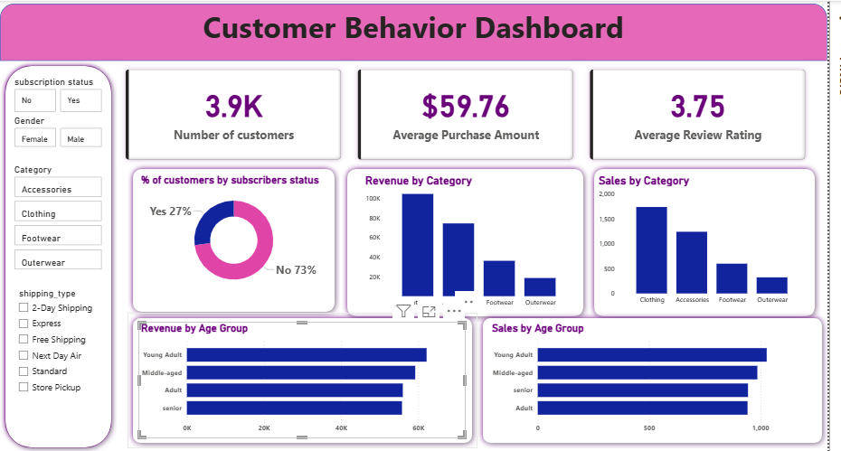
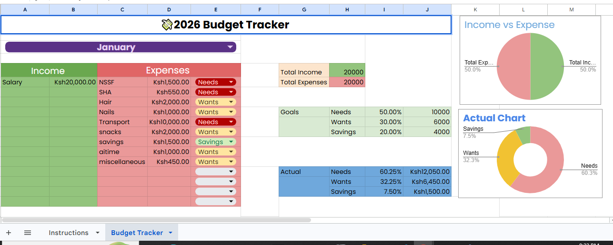
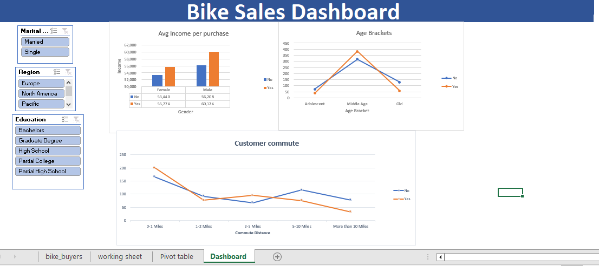

01
Data & programming
Python · Pandas · SQL · MySQL · PostgreSQL · Jupyter Notebook
FINANCE · DATA · INSIGHT
Open to finance and analytics opportunities
I'm Mercy Magut, a Financial Engineering graduate and data analytics professional interested in financial analysis, business intelligence, credit and risk analytics.
01 / ABOUT
I'm a Financial Engineering graduate with experience in finance operations, credit monitoring and financial reporting.
I use SQL, Python, Excel and Power BI to analyse data, uncover patterns and communicate insights that support better business decisions.
My interests lie in financial analysis, credit and risk analytics, and business intelligence.
02 / TOOLKIT
Python · Pandas · SQL · MySQL · PostgreSQL · Jupyter Notebook
Power BI · Excel · PivotTables · Dashboards · Data visualisation
Data cleaning · Exploratory analysis · Statistical analysis · Reporting · Forecasting
Financial analysis · Credit monitoring · Risk analysis · Reconciliations · Accounts receivable
03 / SELECTED WORK
Practical projects demonstrating my approach to data preparation, analysis, problem-solving and communicating findings to support better decisions.

PYTHON / MARKET ANALYSISInvestigated Nairobi's short-term rental market using active Airbnb listing data. Used Python and Pandas to clean and explore prices, room types, availability and neighbourhood distribution.
Outcome: Developed a structured market analysis and neighbourhood summary to support a clearer understanding of Nairobi's short-term rental landscape.

POWER BI / CUSTOMER INSIGHTSAnalysed 3,900 purchase records to investigate customer purchasing behaviour and explore patterns across customer segments.
Outcome: Produced a cleaned analytical dataset and interactive dashboard to explore customer purchasing patterns.

GOOGLE SHEETS / PERSONAL FINANCEDeveloped a personal finance and budgeting tool in Google Sheets to organise financial information and monitor income and expenditure.
Outcome: Created a consolidated financial tracking tool to improve visibility of personal finances and support budgeting decisions.
Used MySQL to prepare and analyse a layoffs dataset, addressing duplicates, missing information and inconsistencies before conducting exploratory analysis.
Outcome: Created a more consistent dataset and investigated patterns in company layoffs and industry trends using SQL.

EXCEL / SALES DASHBOARDCleaned and prepared bike sales data in Excel, identifying and removing 26 duplicate records before developing an interactive dashboard.
Outcome: Created an interactive reporting dashboard to examine customer demographics and compare sales patterns across regions and customer groups.
Detailed methods and supporting materials are available through the linked repositories and reports.
04 / EXPERIENCE
Supported client-facing financial advisory activities and developed practical exposure to financial products, investment conversations and communicating financial information.
05 / EDUCATION
Jomo Kenyatta University of Agriculture and Technology (JKUAT)
ALX Africa · Data Analytics Training
06 / CONTACT
Interested in finance, data analysis or business intelligence opportunities? I'd be glad to connect.
Email: mjepkorir69@gmail.com